8. CRMとの統合(Zendesk)¶
これまでの章でエンドユーザーからの着信をコンタクトセンターのエージェントが受ける というフローの構築を行いました。
本番環境でのコンタクトセンターではこれだけではなく顧客管理が必要になってきます。
Twilio Flexには顧客管理する機能を持っていないのですが、 CRMとの連携をすることによって可能になります。
本ハンズオンではZendeskとの統合を行います。
Zendesk上でエンドユーザーからの着信を受け取り、サポートチケットが起票されることを確認します。
8-1. Flex側のセットアップ¶
1. Flexにアクセス¶
管理者としてhttps://flex.twilio.comにアクセスします
INTEGRATIONSにあるCONFIGUREをクリックします。
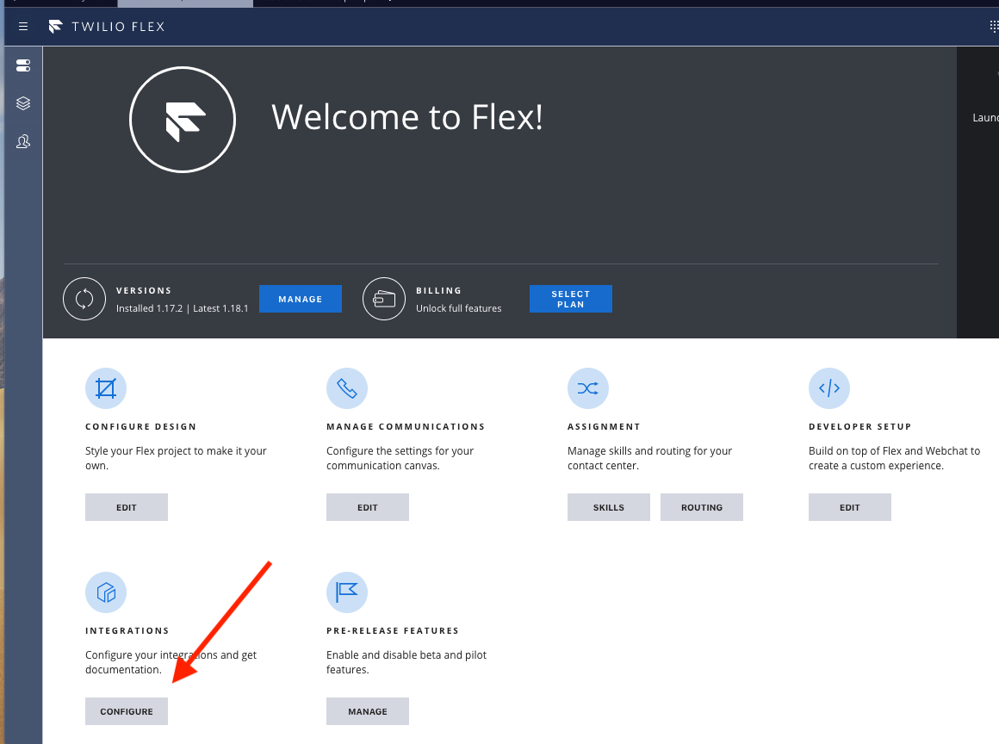
INTEGRATIONSの画面でZendeskを選択します。
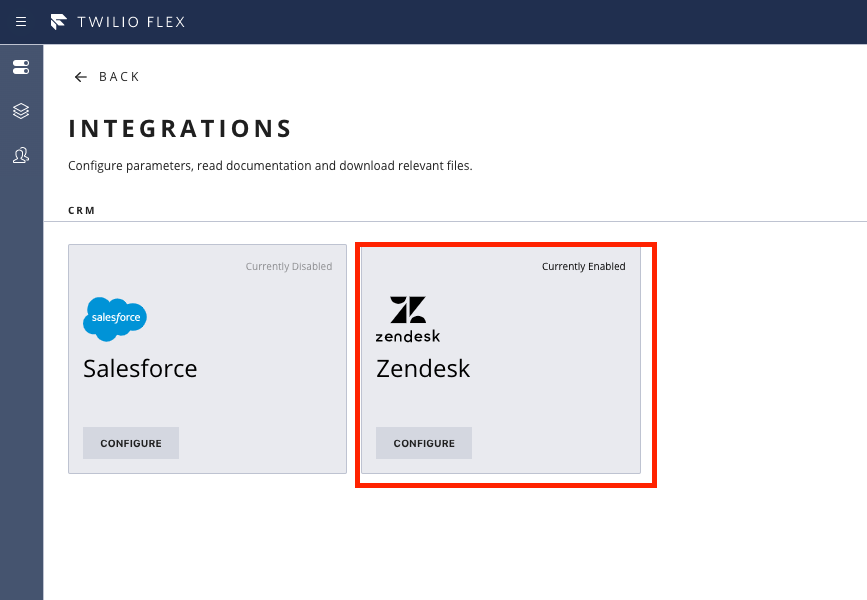
2. 設定を行う¶
| 設定名 | 説明 |
|---|---|
| STATUS | 統合を有効にするかどうか |
| Workflow SID | デフォルトのワークフローとは異なるワークフローを使用する場合は、ここにワークフローSIDを入力してください。そうでない場合は、空のままにします |
| Task Channel SID | デフォルトの音声チャネルとは異なるタスクチャネルを使用する場合は、ここにタスクチャネルSIDを指定してください。そうでない場合は、空のままにします |
| Agent Caller ID | エージェントが発信者IDを定義していない場合、Flex-Zendeskインテグレーションからの（Click to Dialを介した）アウトバウンドコールに使用される発信者ID。 |
| Zendesk Base URL | ZendeskドメインURL |
| RECORDING | インバウンド音声録音を有効, 内部メモとしてチャットの詳細をログに記録 |
| New ticket description | Flexによる自動チケット作成に使用される説明 |
| New ticket subject | Flexによる自動チケット作成に使用されるサブジェクト |
| LOG | タスクのメタデータを関連するZendeskチケットに「内部メモ」として記録する必要がある場合、タスクのステージを設定できます。3つのステージのいずれかを選択することも、まったく選択しないこともできます。 - タスクの開始：エージェントがタスクを受け入れるときにログに記録します。 - タスク切り替え：エージェントがタスクを選択したときにログに記録します。マルチタスク設定で特に役立ちます - タスク完了：エージェントがタスクを完了したときにログに記録します。 |
| NAVIGATE | エージェントがタスクを承諾/選択するときにScreenpopの性質を選択します - エージェント画面にチケットを表示する - エージェント画面にユーザーを表示する - 何も表示しない |
| CREATE | 新しいチケットまたはユーザーを作成するかどうか、いつ作成するかを選択します。無効なチケット番号が提供された場合、または提供されなかった場合、次のことを選択できます - 新しいチケットを作成する - ユーザーが不明な場合は、新しいユーザーを作成します。 |
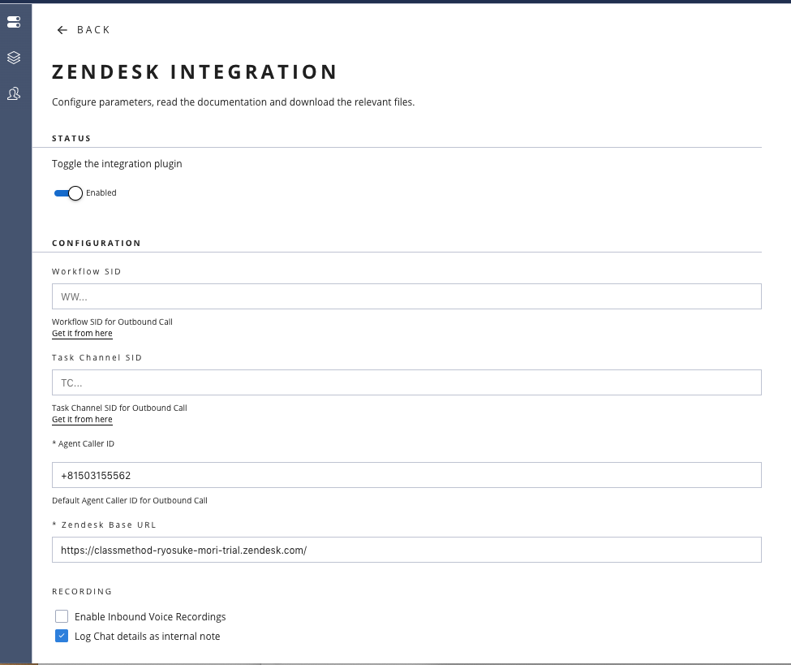
8-2. Zendesk側のセットアップ¶
1. Zendesk Marketplace¶
Twilio Flexと連携したいZendeskにログインした状態で、Zendesk Marketplaceに遷移します。
https://www.zendesk.com/apps/support/twilio-flex
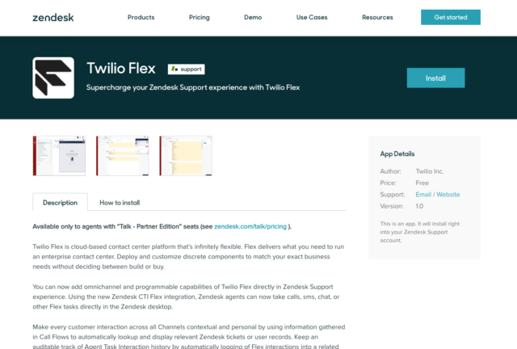
2. installと設定¶
ページ上部のinstallをクリックします。
設定画面に遷移するので変更したいパラメーターを記入します。
| 設定名 | 説明 |
|---|---|
| Flex URL | Hosted Flexを使用する場合はそのままにします。 独自のインフラストラクチャでFlexをセルフホスティングする場合は、 これをFlexインスタンスのURLに変更する必要があります。 不明な場合は、フィールドをそのままにしておきます。 このフィールドは、ZendeskのTwilio Flex Appに、 Flexがホストされ利用可能な場所を通知します。 |
| Flex widget width size (in pixels) | Zendesk UI内のFlexアプリの幅をピクセル単位で指定します。 幅を決定する際に考慮すべき重要なことは、 音声以外のチャネルを使用する場合、 サポートスタッフに優れたチャットエクスペリエンスを提供するため、 より広いFlexアプリが役立つことです。 |
| Flex widget height size (in pixels) | (widthと同じ説明) |
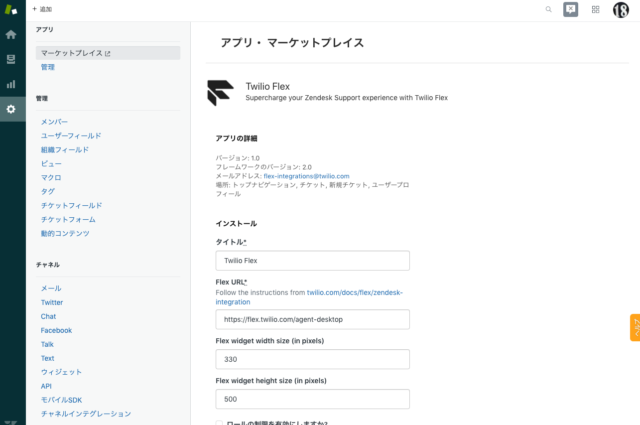
変更後、インストールをクリックします。
インストールが終わると、Zendeskのページ上部にTwilio Flexアプリのアイコンが表示されていて、クリックするとウィジェットが起動します。
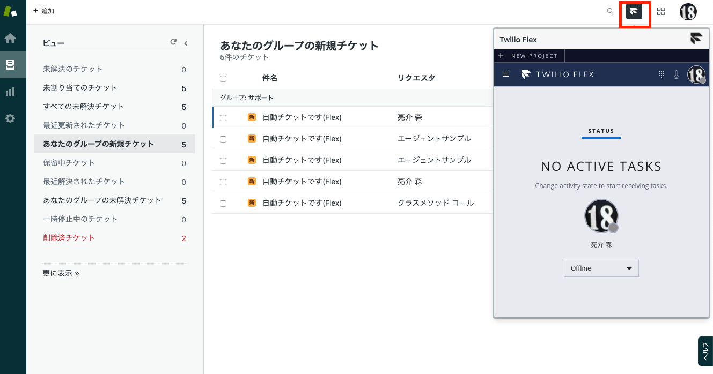
8-3. Flex-Zendeskコールフローの確認とカスタマイズ¶
着信を受け入れてチケットが発番されるか確認します。
2. カスタマイズする¶
顧客からの着信を受けてチケットが生成されますが、 エージェントが着信を受けた後、その顧客に関する既存のチケットを表示させたい時もあります。
これを行うには顧客からのチケット番号を収集するためのIVRフローをカスタムする必要があります。
1. Flex Flow画面から、「Voice IVR」フローを選択します¶
https://www.twilio.com/console/studio/dashboardに遷移して、Voice IVRをクリックします。
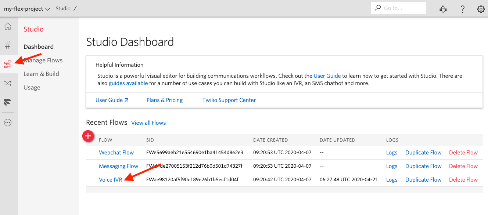
2. Gather Input on Call Widgetを追加¶
発信者からチケット番号を収集するためにGather Input on Call Widgetを追加します。
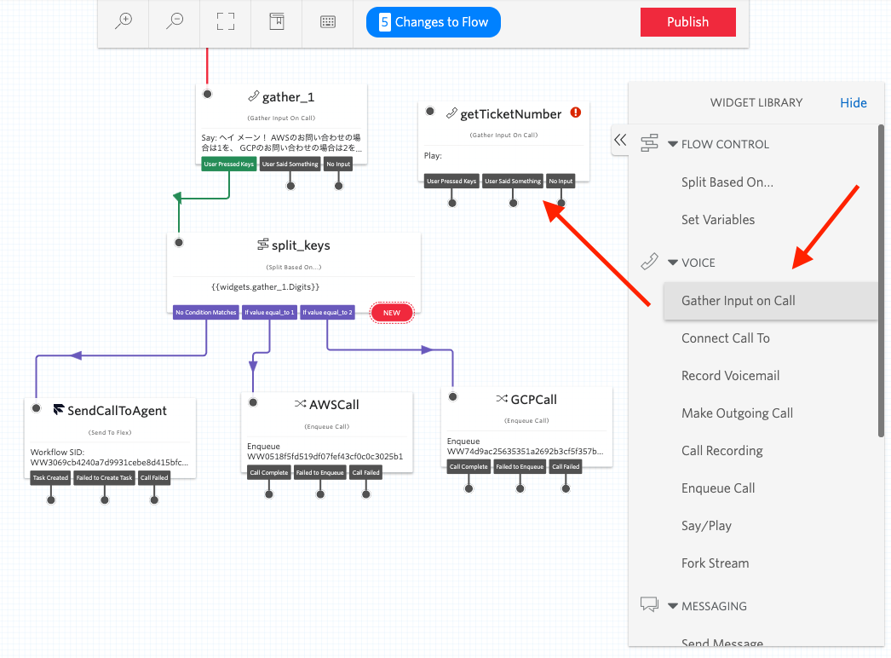
任意の名前をつけておきます。
例) getTicketNumber
以下の図のように、gather_1の上に来るようにフローを修正します。
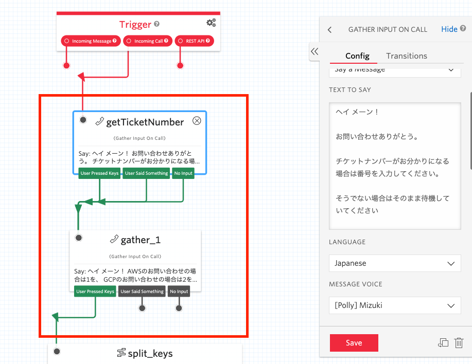
3. TASK ATTRIBUTESの修正¶
Voice IVRフローの最後にあるコール部分のウィジェットにあるATTRIBUTESを以下の内容に変更し保存します。
{ "type": "inbound", "name": "{{trigger.call.From}}","zd_ticket_id" : "{{widgets.getTicketNumber.Digits}}" }
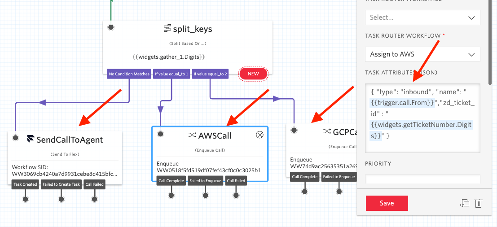
3. 着信の確認¶
Flexの電話番号に電話をかけてみます。
チケット番号を指定すると、新しいチケットの代わりにチケット画面が表示されます。
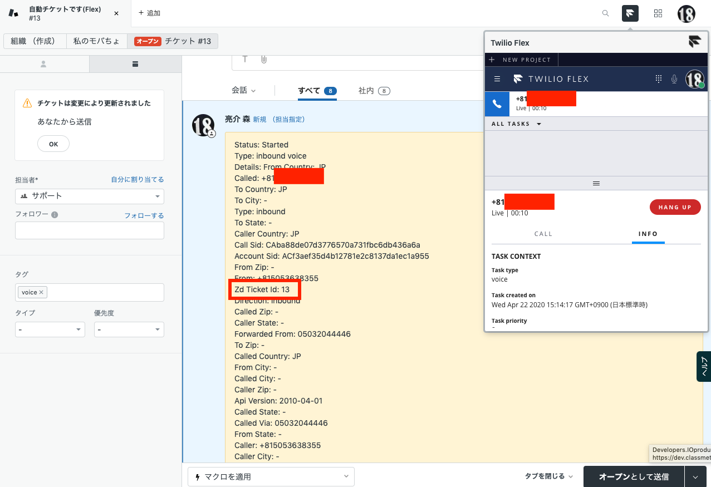
SMS、Whatsapp、Webchatなどのテキストベースのチャネルでメッセージングボットを使用してチケット番号を収集し、そのチケット番号を「zd_ticket_id」タスク属性としてFlexに渡すこともできます。
4. (参考) Zendeskチケットにカスタムタグを追加するためのIVRフロー¶
zdCustomTagsという名前のタスク属性にタグを追加して、顧客エンゲージメントフローで特定されたカスタムタグを追加できます。
この章は以上で終了です。